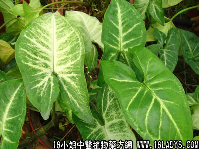

植物名：芋。
生长环境：本品为粗壮草本。是杂粮或蔬菜作物，喜潮湿环境，栽种于水田中或经常水灌溉田间。
分布：原产印度，现各地均有种植。
入药部分：茎。
采集期：秋、冬。
自采地点：家种。
性味：性平、味甘。
功能：除肠胃腻滞。
主治、用量和用法：1、感冒伏热、久热不退：干用5钱至1两，清水煎服；2、伤风食滞咳：用法同上；3、痢疾：用法同上。
验方：（治感冒伏热方）芋荚干5钱、金盏银盘5钱、莲蓬壳5钱、兔狗尾5钱、清水三碗，煎成一碗服。
（方解）本方芋荚干除肠胃湿热、解积滞；金盏银盘疏表清热；莲蓬壳解暑；兔狗尾清实热。合成表里双解之剂，如非伤暑，可去莲蓬壳。
（方歌）感冒发热芋荚干，金盏银盘莲蓬壳，煎服还加兔狗尾，伏邪双解疾能霍。